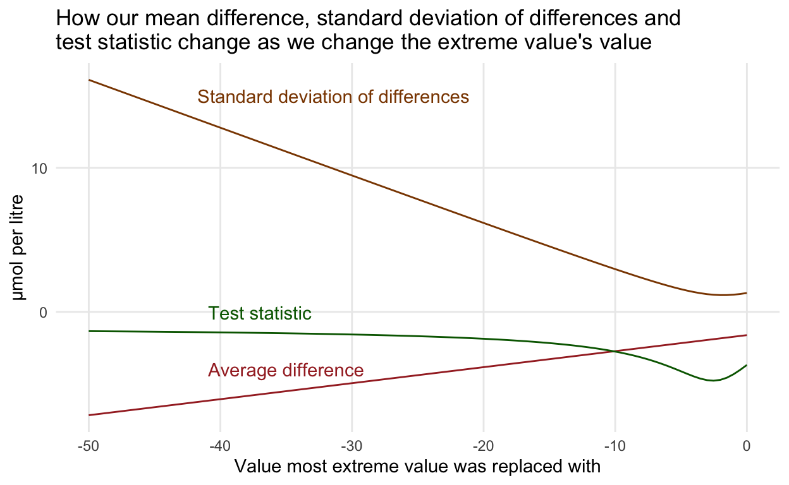

One of the readings for Michael Moon’s and my fourth-year statistics class (STA490: Consultation, Communication, and Collaboration) is the delightful “The joys of consulting” case study from Chris Chatfield in Significance (March, 2007).
There is a comment on page 36 that every year students are very interested in…(bolding mine)
For experiment A, it is noteworthy that, even though all differences have the same sign and the Winsorised sample gives a highly significant result, making the largest observation even more extreme (which might be expected to add to the evidence against the null hypothesis) actually reduces the level of significance. I had not expected this. I knew that significance levels for normal tests were inaccurate when data were skewed, but I did not realise that making an observation more extreme could actually send the significance level in the “wrong” direction.
~ Chris Chatfield, “The joys of consulting” (March, 2007)
Now this might not make much sense out of context, but I thought I’d write this up as a blog post because it would be easy to share with our students AND, at the same, we could share this fun example that others might like to play around with. Fundamentally, it is just a matter of remembering how the t-test works, but it is really great exercise to check whether your REALLY understand what is going on.

My students’ reaction to the above passage every year. Image description: The surprised Pikachu meme, a screen shot from the Pokémon animated series where Pikachu, a yellow electric mouse that fights other pocket monsters, has its mouth wide open in surprise.
Note: Full credit for choosing this article to Alison Gibbs and Nathalie Moon from whom we happily inherited it from.
Set up the data for experiment A
üî• Hot tip! I just copied the data from the PDF, but saved some time on reformatting thanks to multiple cursors in R Studio. A fun trick for you to check out.
expA <- tibble(
sample = c(101, 102, 103, 104, 105, 106, 107, 108, 109),
before = c(7.4, 8.9, 11.1, 12.3, 21.8, 39.6, 43, 46.6, 279.6),
after = c(6.3, 7.9, 10.3, 11.3, 20.7, 36.8, 38.7, 44.2, 254.8)
) %>%
mutate(diff = after-before) %>%
arrange(diff)
expA %>%
kbl() %>%
kable_styling()
| sample | before | after | diff |
|---|---|---|---|
| 109 | 279.6 | 254.8 | -24.8 |
| 107 | 43.0 | 38.7 | -4.3 |
| 106 | 39.6 | 36.8 | -2.8 |
| 108 | 46.6 | 44.2 | -2.4 |
| 105 | 21.8 | 20.7 | -1.1 |
| 101 | 7.4 | 6.3 | -1.1 |
| 102 | 8.9 | 7.9 | -1.0 |
| 104 | 12.3 | 11.3 | -1.0 |
| 103 | 11.1 | 10.3 | -0.8 |
Standard paired t-tests
What are our hypotheses for testing experiment A?
\(H_0:\) The average difference in NT-proBNP concentration before and after being refrigerated is 0.
\(H_1:\) The average difference inNT-proBNP concentration before and after being refrigerated is NOT 0.
If you run ?t.test you’ll get a refresher on how this function works. We input the differences column (not the before and after columns) because this is a paired t-test. The default value of \(\mu\) is 0 which is the correct null value for our investigation.
t.test(expA$diff)
One Sample t-test
data: expA$diff
t = -1.6902, df = 8, p-value = 0.1295
alternative hypothesis: true mean is not equal to 0
95 percent confidence interval:
-10.324340 1.591007
sample estimates:
mean of x
-4.366667 We see that we have a large p-value (larger than 0.05) and so have no evidence against the claim that the the NT-proBNP concentration before and after being refrigerated is 0.
Let’s Winsorize!
Read the article to understand why I’m about to do this as well as the final analyses Chatfield recommended.
As I already arranged this dataset when I made it above, I know that my most extreme difference is in the first row. I’ll replace it with the next most extreme value, in the second row, and then re-run the t-test.
# create base for Winsorizing
expA_wins <- expA
# Winsorize (note this code isn't necessarily generalizable!)
expA_wins$diff[1] <- expA_wins$diff[2]
hist(expA_wins$diff)
Hmmm, looks pretty ugly still when it comes to our normality assumption!
shapiro.test(expA_wins$diff)
Shapiro-Wilk normality test
data: expA_wins$diff
W = 0.7965, p-value = 0.01863And not normal enough for Shapiro-Wilk’s test, and that often gives a pass to small samples sizes, even when it shouldn’t.
# t-test
t.test(expA_wins$diff)
One Sample t-test
data: expA_wins$diff
t = -4.381, df = 8, p-value = 0.002346
alternative hypothesis: true mean is not equal to 0
95 percent confidence interval:
-3.1884096 -0.9893681
sample estimates:
mean of x
-2.088889 So, as described, when we Winsorize, we get a significant result from the paired t-test. Why do we get this significant result when we DECREASE the average difference?
| Version | Mean difference | Standard deviation |
| Raw | -4.37 | 7.75 |
| Winsorized | -2.09 | 1.43 |
Recall how a t-test statistic is calculated (D is for difference, because our values were paired):
\[t = \frac{\bar{X}_D - \mu_0}{s_D/\sqrt n}\]
The critical value we’re comparing \(t\) it to will stay the same, as we’re not changing sample size, so we need to just think about the relationships in this formula.
- \(\mu_0\) is the hypothesized value of 0 and that will stay the same, and
- \(n\) will also stay the same as we’re not removing or adding data, just dragging a point around.
Therefore, all we’re thinking about is the following relationship:
\[t \propto \frac{\bar{X}_D}{s_D} \]
Recall that \(\propto\) indicates ‘proportional to’.
Simulate changing the extreme value to a range of other values
You may already be able to see where this is going, but let’s make some pictures!
simulation <- tibble(
group = rep(1:100, each = 9),
diff = rep(expA$diff, 100),
obs = rep(1:9, 100)
) %>%
arrange(obs) %>%
mutate(extreme_val = rep(round(seq(-50, 0, length.out = 100), 2), 9))
# replace the most extreme value with a series of other values
simulation$diff[1:100] = round(seq(-50, 0, length.out = 100), 2)
simulation_grouped <- simulation %>%
group_by(group, extreme_val) %>%
select(-obs) %>%
nest() %>%
mutate(t_test = map(data, ~{t.test(.) %>% tidy()})) %>%
unnest(cols = c(data, t_test)) %>%
select(-parameter, -method, -alternative) %>%
mutate(sd = sd(diff))
By the way, this kind of chart is exactly what you shouldn’t do in an acutal analysis. We can’t just pick a value that gives us a significant test result!
So what is going on? Just some math! As the value the extreme value takes decreases, the estimated average difference gets closer to 0, sure, BUT the standard deviation, which is the denominator in the relationship above, decreases, and decreases more quickly than the estimate is decreasing! (Think about the calculation of the standard deviation to see why.). Reducing the extreme value reduces the variability in our sample and so we can actually get a bigger test statistic from a smaller observed average difference!

Practice question: Can you calculate the value for the minimum standard deviation?
Another way to look at this is through the other side of the p-value coin, the good ol’ confidence interval.
In case you want to play more
expB <- tibble(
sample = 1:19,
before = c(7.19, 60.64, 20.56, 4076, 14.69, 23.65, 15.37, 11.71, 36.48, 211.1,
413.7, 24.5, 18.4, 96.23, 15.61, 6.78, 141.7, 187.7, 29.57),
after = c(6.55, 60.85, 19.92, 3954, 13.74, 23.65, 15.2, 11.88, 36.7, 211.1,
422.1, 23.53, 18, 93.01, 15.3, 6.47, 140.6, 185.3, 29.17)) %>%
mutate(diff = after-before) %>%
arrange(diff)
expB
# A tibble: 19 × 4
sample before after diff
<int> <dbl> <dbl> <dbl>
1 4 4076 3954 -122
2 14 96.2 93.0 -3.22
3 18 188. 185. -2.40
4 17 142. 141. -1.10
5 12 24.5 23.5 -0.970
6 5 14.7 13.7 -0.950
7 1 7.19 6.55 -0.640
8 3 20.6 19.9 -0.640
9 13 18.4 18 -0.400
10 19 29.6 29.2 -0.400
11 16 6.78 6.47 -0.310
12 15 15.6 15.3 -0.310
13 7 15.4 15.2 -0.17
14 6 23.6 23.6 0
15 10 211. 211. 0
16 8 11.7 11.9 0.17
17 2 60.6 60.8 0.210
18 9 36.5 36.7 0.220
19 11 414. 422. 8.40 t.test(expB$diff)
One Sample t-test
data: expB$diff
t = -1.0185, df = 18, p-value = 0.322
alternative hypothesis: true mean is not equal to 0
95 percent confidence interval:
-20.071319 6.965003
sample estimates:
mean of x
-6.553158 One thing I wasn’t sure about was whether Chatfield took the next most extreme by moving to next value in order (i.e., for experiment B, from -122.00 to -3.22) or to truly the next biggest (i.e., -122.00 to 8.40). This doesn’t matter for A, but does for B.
I couldn’t replicate the significant result Chatfield mentioned for Experiment B, but I also didn’t spend too much time trying. Let me know if you figure it out.
expB_wins <- expB
# replace with next on number line
expB_wins$diff[1] <- expB_wins$diff[2]
t.test(expB_wins$diff)
One Sample t-test
data: expB_wins$diff
t = -0.5581, df = 18, p-value = 0.5837
alternative hypothesis: true mean is not equal to 0
95 percent confidence interval:
-1.436854 0.833696
sample estimates:
mean of x
-0.3015789 # replace with next biggest overall
expB_wins$diff[1] <- expB_wins$diff[19]
t.test(expB_wins$diff)
One Sample t-test
data: expB_wins$diff
t = 0.45329, df = 18, p-value = 0.6558
alternative hypothesis: true mean is not equal to 0
95 percent confidence interval:
-1.12681 1.74681
sample estimates:
mean of x
0.31 # replace with next biggest overall, but match sign
expB_wins$diff[1] <- -expB_wins$diff[19]
t.test(expB_wins$diff)
One Sample t-test
data: expB_wins$diff
t = -0.85152, df = 18, p-value = 0.4057
alternative hypothesis: true mean is not equal to 0
95 percent confidence interval:
-1.9909449 0.8425238
sample estimates:
mean of x
-0.5742105
Cover image by Mohamed Nohassi on Unsplash